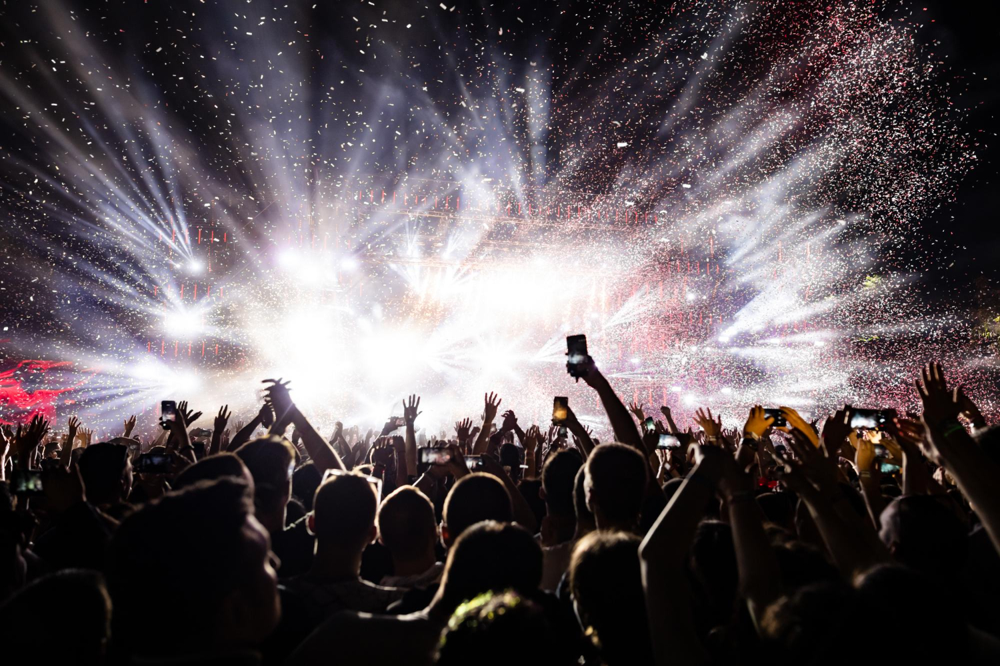
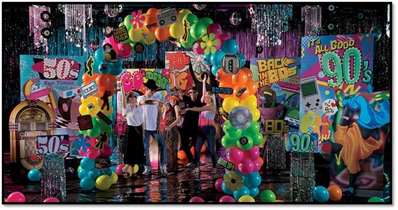
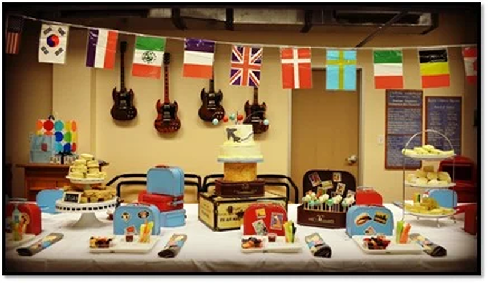

Corporate events or social events are essential for fostering team spirit, networking, and celebrating milestones. But to truly stand out and leave a lasting impression, it's crucial to infuse creativity and innovation into your event planning process. One effective way to do this is by choosing a unique theme that resonates with your company culture and objectives. In this blog post, we'll explore 10 distinct themes guaranteed to make your next corporate event an unforgettable success.

Take your guests back in time with a retro-themed event. Whether it's the swinging 60s, disco fever of the 70s, or neon-soaked 80s, embracing nostalgia adds a fun and lighthearted atmosphere to your gathering. Encourage attendees to dress in period attire, decorate with vintage props, and groove to classic tunes for a truly memorable experience.

Bring the global experience to your event by showcasing different cultures from around the world. Set up themed stations representing various countries, each offering authentic cuisine, music, and activities. Guests can embark on a culinary journey or participate in cultural workshops, fostering diversity and appreciation among attendees.
Add an air of mystery and elegance to your corporate event with a masquerade ball theme. Encourage guests to wear masks and glamorous attire as they mingle and dance the night away. Incorporate opulent decor, live entertainment, and themed cocktails to create an enchanting atmosphere reminiscent of a fascinating evening.
Escape reality and indulge in a whimsical fantasy-themed event. Transform your venue into an enchanted island paradise complete with lush foliage, mystical creatures, and ethereal lighting. From fairy tale forests to mystical underwater realms, the possibilities are endless for creating a magical experience that captivates the imagination.
Roll out the red carpet and embrace the glitz and glamour of Hollywood for your event. Channel the golden age of cinema with elegant decor, paparazzi photo ops, and VIP lounge areas. Guests will feel like A-list celebrities as they mingle amidst the luxury and sophistication of glamour town.
Celebrate the beauty of nature with an enchanted garden-themed event. Transform your venue into a lush botanical paradise adorned with cascading florals, twinkling lights, and whimsical garden accents. Incorporate interactive elements such as flower crown workshops or butterfly releases for an immersive experience that delights the senses.